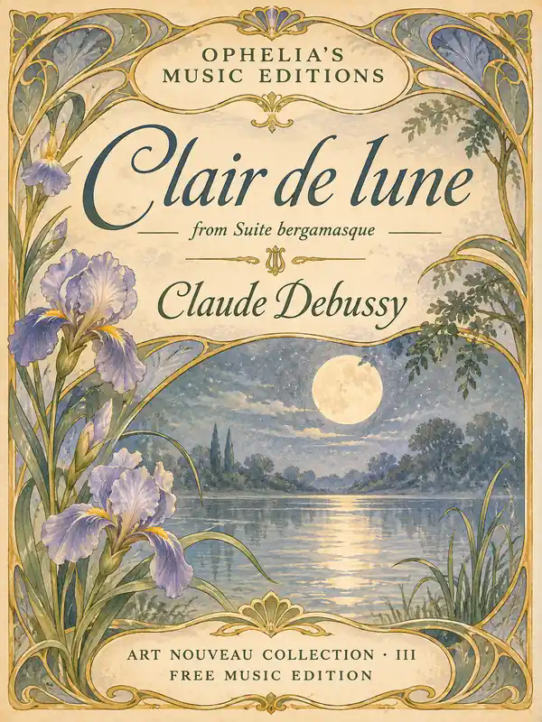

Clair de lune
Claude Debussy (1862–1918) · From Suite bergamasque · Published 1905. Moonlight on still water, expressed in a tender and quietly shimmering piano work.
Everything here is free. Listen, read, print, and download the complete four-page piano score. The composition and this particular score typesetting are both public domain. Ophelia’s original cover is inspired by early twentieth-century Art Nouveau, not an antique facsimile.
Ophelia’s Art Nouveau cover

Free sheet music · four pages
Open / Download Complete Score · FREE ↗Score and rights: Claude Debussy’s music is in the public domain. Complete score typeset by Keith O’Hara, from the E. Fromont (1905) source, Mutopia Project. The typesetter released this engraving into the public domain. If Google’s preview is blank, the full PDF link above remains available for reading, printing, and downloading.